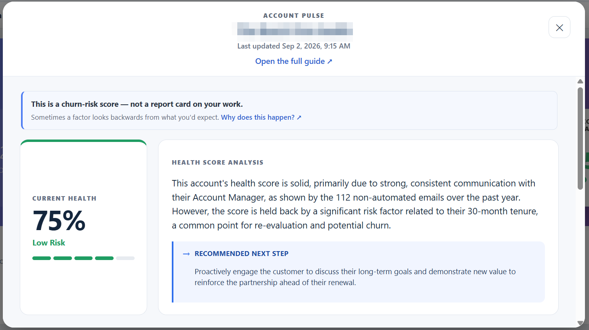
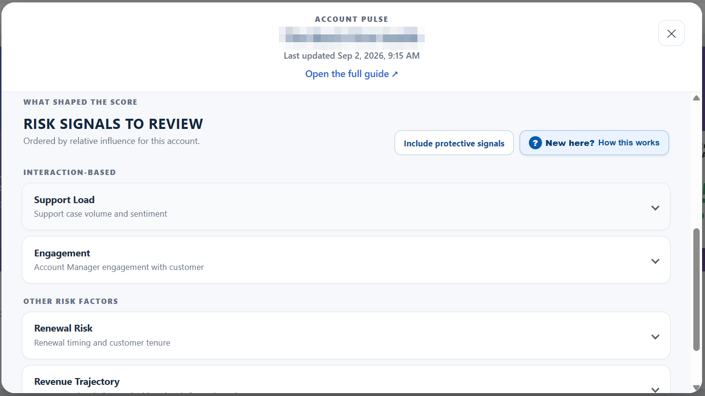
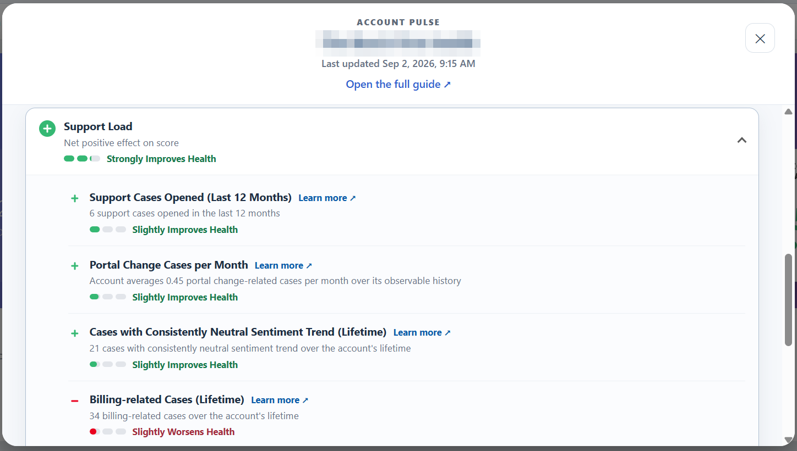
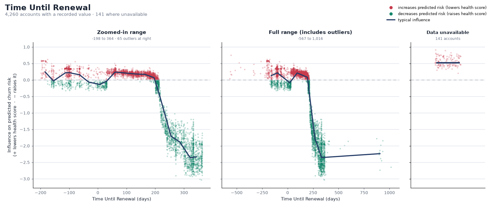
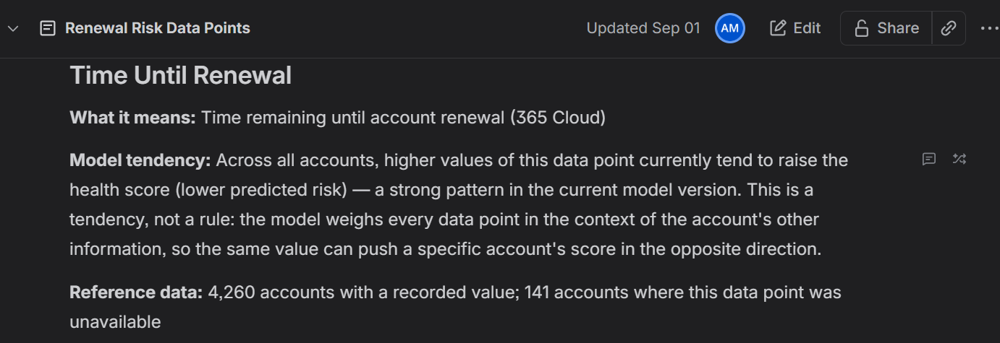

Date: 9/1/26

Account Managers are responsible for retaining a large book of business, but they had no consistent, forward-looking way to know which accounts were drifting toward churn — and, just as importantly, why. Retention decisions leaned on gut feel and lagging indicators that only surfaced a problem once a renewal was already in jeopardy.
The goal was to build a system that scores every active account's churn risk each month, translates that score into a health metric an AM can read at a glance, and — the hard part — explains each score in plain language they can actually act on, delivered directly inside the tools they already use (Salesforce and Confluence). A black-box risk number that nobody trusts is worse than no number at all.
Account Pulse is an end-to-end ML system that runs monthly on Azure ML. It trains, evaluates, and deploys an XGBoost classifier that flags accounts at high risk of offboarding, then inverts that probability into an intuitive health score (100 = healthiest). Every score ships with an explanation: the model's top drivers for that specific account, narrated by an LLM, written back to Salesforce for the AM to see.
The monthly inference pipeline is three chained components:
The differentiator here isn't the classifier — it's making the classifier's reasoning trustworthy to a non-technical audience. Every account's score is decomposed into the individual factors that moved it, using XGBoost's native TreeSHAP (computed directly from the booster, which sidesteps a serialization incompatibility in the standard SHAP library). Each factor is rendered from a feature dictionary into a human sentence — "Account has been a customer for 35 months" rather than a raw column name and value — and grouped into intuitive categories like Support Load, Engagement, and Renewal Risk.


Beyond the per-account modal, I built a standalone flow that publishes a plain-language reference guide to Confluence — one page per data point, each with a friendly name, description, and an influence scatterplot rendered in matplotlib. The charts show how a feature's value relates to its influence on predicted risk across the whole population, so an AM can understand a driver in general before seeing it on a specific account.


The publisher self-corrects on retrain (the "Model tendency" sentences are derived from the same SHAP data, never hardcoded) and is gated by a content fingerprint — the model version plus a hash of the feature definitions — so routine monthly re-scoring is a no-op and the guide only republishes when something that actually changes its meaning changes.
Label engineering & data hygiene: The target is whether an account offboards within 6 months of a given snapshot month. Getting the label right was one of the hardest parts of the project. Of 2,600+ accounts with an offboarded date in Salesforce, nearly 2,000 carried misleading dates — 1,694 shared a single migration-artifact date — leaving only ~600 usable positive accounts. I anchored each account's timeline to its true customer-start (earliest closed-won opportunity, falling back to billing history) rather than record-creation date, which had been generating mislabeled rows from pre-customer months, and added a customer-evidence filter so accounts with no real history are neither trained on nor scored (no score beats a fabricated one).
Leakage auditing: Because positive labels are event-confirmed while negatives require a matured 6-month window, the most recent snapshots skew positive — giving the model subtle "looks recent → churny" channels. I built audits to catch these (e.g. an intent feature that only covered still-active accounts effectively encoded "account still exists today") and enforce a group-aware train/test split on account ID so near-identical monthly rows for the same account can't leak across the split and inflate metrics.
Case-sentiment enrichment: Support-case features draw on an upstream LLM enrichment job that classifies closed cases (sentiment, trajectory, severity, resolution type) into a search index, which the feature pipeline joins in per account.
LLM-narrated explanations: The top drivers per account are handed to Gemini, which writes a constrained-JSON 2–3 sentence summary plus a recommended next step. Calls run parallelized; a full population run completes in roughly 1.5–2 hours. The API path is pinned to a paid tier specifically so customer account data is excluded from any model-improvement or human review.
Diagnostics tooling: I wrote a suite of local SHAP tools — per-account driver tables, population dependence plots, exact pairwise interaction decomposition, and a reusable feature data-quality audit — so any surprising driver can be traced from the UI back through the model to the source data.
I own Account Pulse end to end: problem framing, warehouse and Salesforce data modeling, feature engineering, label design and data-hygiene audits, model training and leakage review, the SHAP explanation layer, the LLM narration, the Azure ML pipeline that runs it monthly, the Salesforce write-back, and the self-updating Confluence guide — plus the diagnostic tooling that keeps the whole thing debuggable.